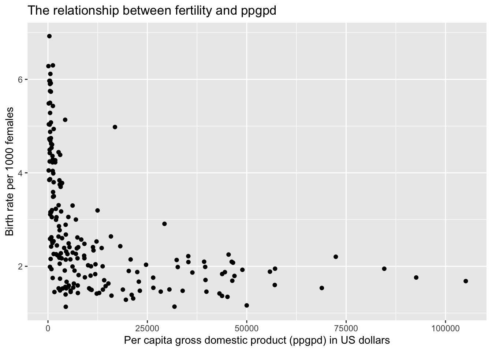
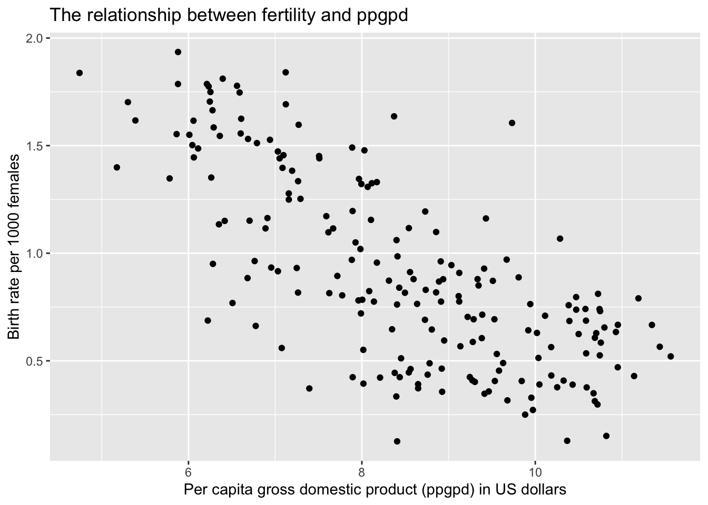
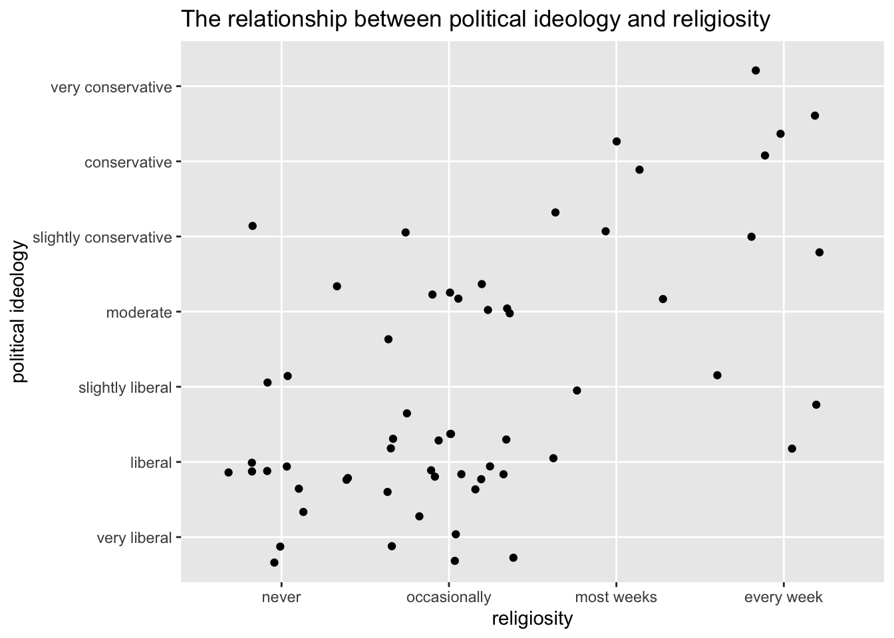
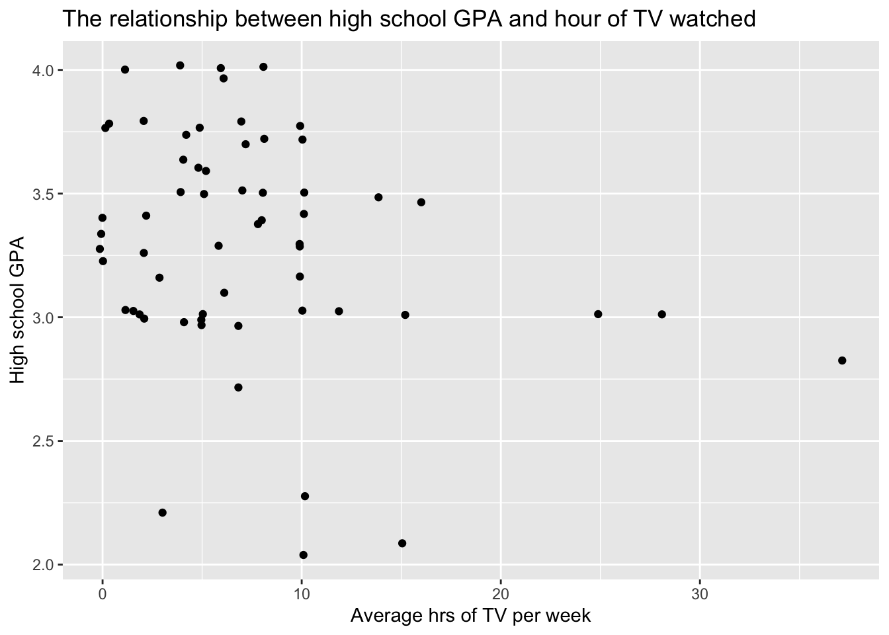

Code
library(tidyverse)
library(alr4)
library(smss)library(tidyverse)
library(alr4)
library(smss)United Nations (Data file: UN11in alr4) The data in the file UN11 contains several variables, including ppgdp, the gross national product per person in U.S. dollars, and fertility, the birth rate per 1000 females, both from the year 2009.
The data are for 199 localities, mostly UN member countries, but also other areas such as Hong Kong that are not independent countries.
The data were collected from the United Nations (2011). We will study the dependence of fertility on ppgdp.
data(UN11)
glimpse(UN11)Rows: 199
Columns: 6
$ region <fct> Asia, Europe, Africa, Africa, Caribbean, Latin Amer, Asia, C…
$ group <fct> other, other, africa, africa, other, other, other, other, oe…
$ fertility <dbl> 5.968, 1.525, 2.142, 5.135, 2.000, 2.172, 1.735, 1.671, 1.94…
$ ppgdp <dbl> 499.0, 3677.2, 4473.0, 4321.9, 13750.1, 9162.1, 3030.7, 2285…
$ lifeExpF <dbl> 49.49, 80.40, 75.00, 53.17, 81.10, 79.89, 77.33, 77.75, 84.2…
$ pctUrban <dbl> 23, 53, 67, 59, 100, 93, 64, 47, 89, 68, 52, 84, 89, 29, 45,…Ppgdp is the predictor variable and Fertility is the response variable.
Draw the scatterplot of fertility on the vertical axis versus ppgdp on the horizontal axis and summarize the information in this graph. Does a straight-line mean function seem to be plausible for a summary of this graph?
ggplot(UN11, aes(ppgdp,fertility)) +
geom_point() +
labs(title = "The relationship between fertility and ppgpd", x = "Per capita gross domestic product (ppgpd) in US dollars", y = "Birth rate per 1000 females")
A straight-line mean function does not seem plausible as a summary for this graph because the data is significantly skewed right. Typically, with data that is significantly skewed we need to use a log-log model.
ggplot(UN11, aes(log(ppgdp),log(fertility))) +
geom_point() +
labs(title = "The relationship between fertility and ppgpd", x = "Per capita gross domestic product (ppgpd) in US dollars", y = "Birth rate per 1000 females")
Now that we’ve taken the logs of both x and y, it does seem plausible that a simple regression model could be used on this graph, as it is evenly distributed across a linear formation, rather than skewed as it was before.
Annual income, in dollars, is an explanatory variable in a regression analysis. For a British version of the report on the analysis, all responses are converted to British pounds sterling (1 pound equals about 1.33 dollars, as of 2016).
If units of measurement change for the explanatory variable, the slope of the equation will go from 1 to 1/1.33 (0.75) (because 1 dollar = 1. degrees Fahrenheit). The intercept would also change
The correlation will not change because correlation will be preserved as long as the explanatory variable of one unit and the explanatory variable of another unit are equal to one another.
Water runoff in the Sierras (Data file: water in alr4) Can Southern California’s water supply in future years be predicted from past data? One factor affecting water availability is stream runoff. If runoff could be predicted, engineers, planners, and policy makers could do their jobs more efficiently. The data file contains 43 years’ worth of precipitation measurements taken at six sites in the Sierra Nevada mountains (labeled APMAM, APSAB, APSLAKE, OPBPC, OPRC, and OPSLAKE) and stream runoff volume at a site near Bishop, California, labeled BSAAM. Draw the scatterplot matrix for these data and summarize the information available from these plots. (Hint: Use the pairs() function.)
pairs(water)
The sites that correlate the most with BSAAM are PSLAK, OPRC, and OPBPC, as can be seen with all of the points falling close to the line, showing a strong positive relationship to BSAAM.
The APMAM, APSAB, and APSLAKE sites do not appear to have a strong relationship with BSAAM, as shown by scatterplots which are quite scattered and do not reveal a linear relationship.
Professor ratings (Data file: Rateprof in alr4) In the website and online forum RateMyProfessors.com, students rate and comment on their instructors. Launched in 1999, the site includes millions of ratings on thousands of instructors. The data file includes the summaries of the ratings of 364 instructors at a large campus in the Midwest (Bleske-Rechek and Fritsch, 2011). Each instructor included in the data had at least 10 ratings over a several year period. Students provided ratings of 1–5 on quality, helpfulness, clarity, easiness of instructor’s courses, and raterInterest in the subject matter covered in the instructor’s courses. The data file provides the averages of these five ratings. Create a scatterplot matrix of these five variables. Provide a brief description of the relationships between the five ratings.
Rateprofscatter <- Rateprof %>%
select(c(quality, helpfulness, clarity, easiness, raterInterest))
pairs(Rateprofscatter)
The above scatterplot matrix shows: - A strong positive relationship between quality, helpfulness, and clarity - A weak positive relationship between easiness, quality, helpfulness, and clarity - No obvious relationship between raterInterest and the other variables
For the student.survey data file in the smss package, conduct regression analyses relating (by convention, y denotes the outcome variable, x denotes the explanatory variable) (i) y = political ideology and x = religiosity, (ii) y = high school GPA and x = hours of TV watching. (You can use ?student.survey in the R console, after loading the package, to see what each variable means.)
Graphically portray how the explanatory variable relates to the outcome variable in each of the two cases
data("student.survey")
glimpse(student.survey)Rows: 60
Columns: 18
$ subj <int> 1, 2, 3, 4, 5, 6, 7, 8, 9, 10, 11, 12, 13, 14, 15, 16, 17, 18, 19…
$ ge <fct> m, f, f, f, m, m, m, f, m, m, m, f, m, m, f, f, f, m, m, f, f, f,…
$ ag <int> 32, 23, 27, 35, 23, 39, 24, 31, 34, 28, 23, 27, 36, 28, 28, 25, 4…
$ hi <dbl> 2.2, 2.1, 3.3, 3.5, 3.1, 3.5, 3.6, 3.0, 3.0, 4.0, 2.3, 3.5, 3.3, …
$ co <dbl> 3.5, 3.5, 3.0, 3.2, 3.5, 3.5, 3.7, 3.0, 3.0, 3.1, 2.6, 3.6, 3.5, …
$ dh <int> 0, 1200, 1300, 1500, 1600, 350, 0, 5000, 5000, 900, 253, 190, 245…
$ dr <dbl> 5.0, 0.3, 1.5, 8.0, 10.0, 3.0, 0.2, 1.5, 2.0, 2.0, 1.5, 3.0, 1.5,…
$ tv <dbl> 3, 15, 0, 5, 6, 4, 5, 5, 7, 1, 10, 14, 6, 3, 4, 7, 6, 5, 6, 25, 4…
$ sp <int> 5, 7, 4, 5, 6, 5, 12, 3, 5, 1, 15, 3, 15, 10, 3, 6, 7, 9, 12, 0, …
$ ne <int> 0, 5, 3, 6, 3, 7, 4, 3, 3, 2, 1, 7, 12, 1, 1, 1, 3, 6, 2, 0, 4, 7…
$ ah <int> 0, 6, 0, 3, 0, 0, 2, 1, 0, 1, 1, 0, 5, 2, 0, 0, 10, 10, 2, 2, 1, …
$ ve <lgl> FALSE, FALSE, FALSE, FALSE, FALSE, FALSE, FALSE, FALSE, FALSE, FA…
$ pa <fct> r, d, d, i, i, d, i, i, i, i, r, d, d, i, d, i, i, d, i, d, i, i,…
$ pi <ord> conservative, liberal, liberal, moderate, very liberal, liberal, …
$ re <ord> most weeks, occasionally, most weeks, occasionally, never, occasi…
$ ab <lgl> FALSE, FALSE, FALSE, FALSE, FALSE, FALSE, FALSE, FALSE, FALSE, FA…
$ aa <lgl> FALSE, FALSE, FALSE, FALSE, FALSE, FALSE, FALSE, FALSE, FALSE, FA…
$ ld <lgl> FALSE, NA, NA, FALSE, FALSE, NA, FALSE, FALSE, NA, FALSE, FALSE, …First, we will graph the relationship between religiosity (re) (the explanatory variable) and political ideology (pi) (the outcome variable).
data("student.survey")
glimpse(student.survey)Rows: 60
Columns: 18
$ subj <int> 1, 2, 3, 4, 5, 6, 7, 8, 9, 10, 11, 12, 13, 14, 15, 16, 17, 18, 19…
$ ge <fct> m, f, f, f, m, m, m, f, m, m, m, f, m, m, f, f, f, m, m, f, f, f,…
$ ag <int> 32, 23, 27, 35, 23, 39, 24, 31, 34, 28, 23, 27, 36, 28, 28, 25, 4…
$ hi <dbl> 2.2, 2.1, 3.3, 3.5, 3.1, 3.5, 3.6, 3.0, 3.0, 4.0, 2.3, 3.5, 3.3, …
$ co <dbl> 3.5, 3.5, 3.0, 3.2, 3.5, 3.5, 3.7, 3.0, 3.0, 3.1, 2.6, 3.6, 3.5, …
$ dh <int> 0, 1200, 1300, 1500, 1600, 350, 0, 5000, 5000, 900, 253, 190, 245…
$ dr <dbl> 5.0, 0.3, 1.5, 8.0, 10.0, 3.0, 0.2, 1.5, 2.0, 2.0, 1.5, 3.0, 1.5,…
$ tv <dbl> 3, 15, 0, 5, 6, 4, 5, 5, 7, 1, 10, 14, 6, 3, 4, 7, 6, 5, 6, 25, 4…
$ sp <int> 5, 7, 4, 5, 6, 5, 12, 3, 5, 1, 15, 3, 15, 10, 3, 6, 7, 9, 12, 0, …
$ ne <int> 0, 5, 3, 6, 3, 7, 4, 3, 3, 2, 1, 7, 12, 1, 1, 1, 3, 6, 2, 0, 4, 7…
$ ah <int> 0, 6, 0, 3, 0, 0, 2, 1, 0, 1, 1, 0, 5, 2, 0, 0, 10, 10, 2, 2, 1, …
$ ve <lgl> FALSE, FALSE, FALSE, FALSE, FALSE, FALSE, FALSE, FALSE, FALSE, FA…
$ pa <fct> r, d, d, i, i, d, i, i, i, i, r, d, d, i, d, i, i, d, i, d, i, i,…
$ pi <ord> conservative, liberal, liberal, moderate, very liberal, liberal, …
$ re <ord> most weeks, occasionally, most weeks, occasionally, never, occasi…
$ ab <lgl> FALSE, FALSE, FALSE, FALSE, FALSE, FALSE, FALSE, FALSE, FALSE, FA…
$ aa <lgl> FALSE, FALSE, FALSE, FALSE, FALSE, FALSE, FALSE, FALSE, FALSE, FA…
$ ld <lgl> FALSE, NA, NA, FALSE, FALSE, NA, FALSE, FALSE, NA, FALSE, FALSE, …ggplot(student.survey, aes(re,pi)) +
geom_jitter() +
labs(title = "The relationship between political ideology and religiosity",
x = "religiosity",
y = "political ideology") 
There is a weak positive correlation between how often someone attends religious services and how conservative they are.
#Convert ordinal to numeric data for
student.survey.num <- student.survey %>%
mutate("pi" = case_when(
pi == "very liberal" ~ 1,
pi == "liberal" ~ 2,
pi == "slightly liberal" ~ 3,
pi == "moderate" ~ 4,
pi == "slightly conservative" ~ 5,
pi == "conservative" ~ 6,
pi == "very conservative" ~ 7)) %>%
mutate("re" = case_when(
re == "never" ~ 1,
re == "occasionally" ~ 2,
re == "most weeks" ~ 3,
re == "every week" ~ 4))
reg1 <- lm(pi ~ re, data = student.survey.num)
summary(reg1)
Call:
lm(formula = pi ~ re, data = student.survey.num)
Residuals:
Min 1Q Median 3Q Max
-2.81243 -0.87160 0.09882 1.12840 3.09882
Coefficients:
Estimate Std. Error t value Pr(>|t|)
(Intercept) 0.9308 0.4252 2.189 0.0327 *
re 0.9704 0.1792 5.416 1.22e-06 ***
---
Signif. codes: 0 '***' 0.001 '**' 0.01 '*' 0.05 '.' 0.1 ' ' 1
Residual standard error: 1.345 on 58 degrees of freedom
Multiple R-squared: 0.3359, Adjusted R-squared: 0.3244
F-statistic: 29.34 on 1 and 58 DF, p-value: 1.221e-06The regression indicates that there is a significant and positive relationship between religiosity and political ideology (p-value = 1.22e-06), with people who report being more conservative being more likely to attend religious services often. The R-squared in this model is high (0.33), meaning the model is a pretty good fit for the relationship.
##2 Next, we will graph the relationship between hours of TV watched (tv) (the explanatory variable) and high school GPA (hi) (the outcome variable).
data("student.survey")
glimpse(student.survey)Rows: 60
Columns: 18
$ subj <int> 1, 2, 3, 4, 5, 6, 7, 8, 9, 10, 11, 12, 13, 14, 15, 16, 17, 18, 19…
$ ge <fct> m, f, f, f, m, m, m, f, m, m, m, f, m, m, f, f, f, m, m, f, f, f,…
$ ag <int> 32, 23, 27, 35, 23, 39, 24, 31, 34, 28, 23, 27, 36, 28, 28, 25, 4…
$ hi <dbl> 2.2, 2.1, 3.3, 3.5, 3.1, 3.5, 3.6, 3.0, 3.0, 4.0, 2.3, 3.5, 3.3, …
$ co <dbl> 3.5, 3.5, 3.0, 3.2, 3.5, 3.5, 3.7, 3.0, 3.0, 3.1, 2.6, 3.6, 3.5, …
$ dh <int> 0, 1200, 1300, 1500, 1600, 350, 0, 5000, 5000, 900, 253, 190, 245…
$ dr <dbl> 5.0, 0.3, 1.5, 8.0, 10.0, 3.0, 0.2, 1.5, 2.0, 2.0, 1.5, 3.0, 1.5,…
$ tv <dbl> 3, 15, 0, 5, 6, 4, 5, 5, 7, 1, 10, 14, 6, 3, 4, 7, 6, 5, 6, 25, 4…
$ sp <int> 5, 7, 4, 5, 6, 5, 12, 3, 5, 1, 15, 3, 15, 10, 3, 6, 7, 9, 12, 0, …
$ ne <int> 0, 5, 3, 6, 3, 7, 4, 3, 3, 2, 1, 7, 12, 1, 1, 1, 3, 6, 2, 0, 4, 7…
$ ah <int> 0, 6, 0, 3, 0, 0, 2, 1, 0, 1, 1, 0, 5, 2, 0, 0, 10, 10, 2, 2, 1, …
$ ve <lgl> FALSE, FALSE, FALSE, FALSE, FALSE, FALSE, FALSE, FALSE, FALSE, FA…
$ pa <fct> r, d, d, i, i, d, i, i, i, i, r, d, d, i, d, i, i, d, i, d, i, i,…
$ pi <ord> conservative, liberal, liberal, moderate, very liberal, liberal, …
$ re <ord> most weeks, occasionally, most weeks, occasionally, never, occasi…
$ ab <lgl> FALSE, FALSE, FALSE, FALSE, FALSE, FALSE, FALSE, FALSE, FALSE, FA…
$ aa <lgl> FALSE, FALSE, FALSE, FALSE, FALSE, FALSE, FALSE, FALSE, FALSE, FA…
$ ld <lgl> FALSE, NA, NA, FALSE, FALSE, NA, FALSE, FALSE, NA, FALSE, FALSE, …ggplot(student.survey, aes(tv,hi)) +
geom_jitter() +
labs( title = "The relationship between high school GPA and hour of TV watched",
x = "Average hrs of TV per week",
y = "High school GPA")
There does not appear to be a significant relationship between high school GPA and average hrs of TV per week, with a lot of the data skewed right.
summary(lm(hi~tv, data = student.survey))
Call:
lm(formula = hi ~ tv, data = student.survey)
Residuals:
Min 1Q Median 3Q Max
-1.2583 -0.2456 0.0417 0.3368 0.7051
Coefficients:
Estimate Std. Error t value Pr(>|t|)
(Intercept) 3.441353 0.085345 40.323 <2e-16 ***
tv -0.018305 0.008658 -2.114 0.0388 *
---
Signif. codes: 0 '***' 0.001 '**' 0.01 '*' 0.05 '.' 0.1 ' ' 1
Residual standard error: 0.4467 on 58 degrees of freedom
Multiple R-squared: 0.07156, Adjusted R-squared: 0.05555
F-statistic: 4.471 on 1 and 58 DF, p-value: 0.03879This regression indicates that there is a significant and negative relationship between hour of TV watched and a high GPA (p-value = 0.04), with people who watch TV having a lower GPA. However, the R-squared for this relationship is just 0.07, indicating that it is a poor fit for this relationship.